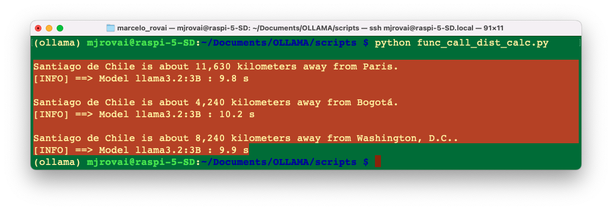
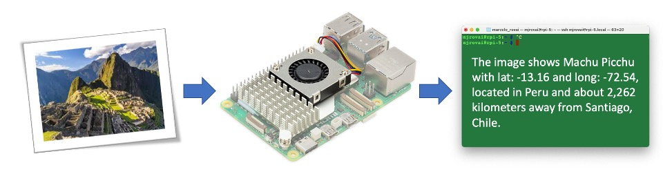
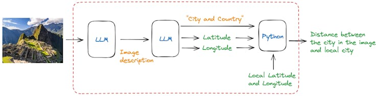
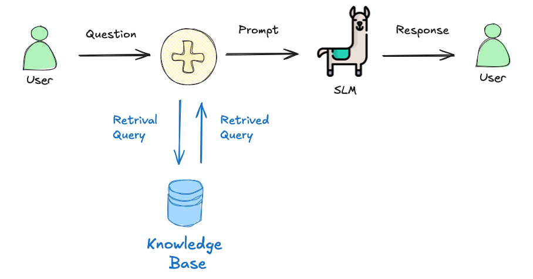
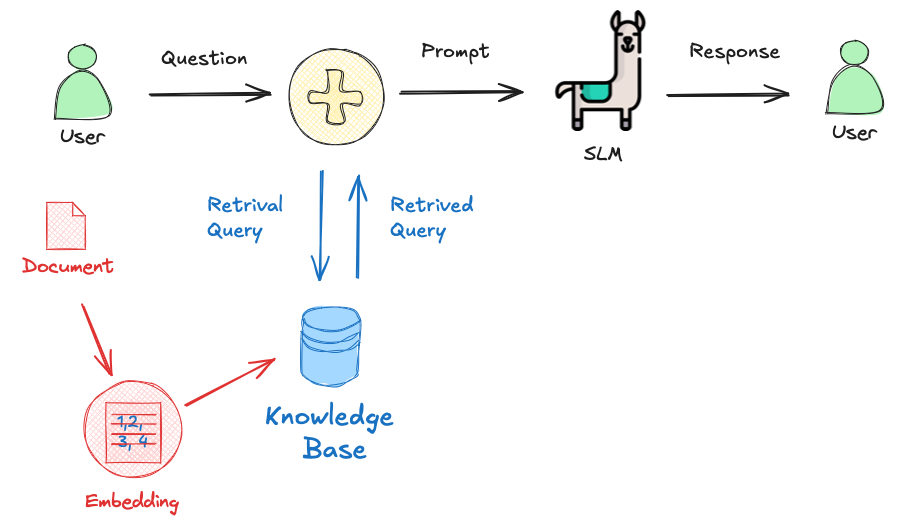

SLM: Basic Optimization Techniques
Introduction
Large Language Models (LLMs) have revolutionized natural language processing, but their deployment and optimization come with unique challenges. One significant issue is the tendency for LLMs (and more, the SLMs) to generate plausible-sounding but factually incorrect information, a phenomenon known as hallucination. This occurs when models produce content that appears coherent but lacks grounding in truth or real-world facts.
Other challenges include the immense computational resources required for training and running these models, the difficulty in maintaining up-to-date knowledge within the model, and the need for domain-specific adaptations. Privacy concerns also arise when handling sensitive data during training or inference. Additionally, ensuring consistent performance across diverse tasks and maintaining ethical use of these powerful tools present ongoing challenges. Addressing these issues is crucial for the effective and responsible deployment of LLMs in real-world applications.
The fundamental and more common techniques for enhancing LLM (and SLM) performance and efficiency are Function (or Tool) Calling, Prompt engineering, Fine-tuning, and Retrieval-Augmented Generation (RAG).
- Function (Tool) calling allows models to perform actions beyond generating text. By integrating with external functions or APIs, SLMs can access real-time data, automate tasks, and perform precise calculations—addressing the reliability issues that arise from the model’s limitations in mathematical operations.
- Prompt engineering is at the forefront of LLM optimization. By carefully crafting input prompts, we can guide models to produce more accurate and relevant outputs. This technique involves structuring queries that leverage the model’s pre-trained knowledge and capabilities, often incorporating examples or specific instructions to shape the desired response.
- Retrieval-Augmented Generation (RAG) represents a powerful approach that’s ideal for resource-constrained edge devices. This method combines the knowledge embedded in pre-trained models with the ability to access external, up-to-date information without requiring fine-tuning. By retrieving relevant data from a local knowledge base, RAG significantly enhances accuracy and reduces hallucinations—all without the computational overhead of model retraining.
- Fine-tuning, while more resource-intensive, offers a way to specialize LLMs for specific domains or tasks. This process involves further training the model on carefully curated datasets, allowing it to adapt its vast general knowledge to particular applications. Fine-tuning can lead to substantial performance improvements, especially in specialized fields or for unique use cases.
In this chapter, we’ll start focusing on two techniques that are particularly well-suited for edge devices like the Raspberry Pi: Function Calling and RAG.
We will learn more in detail about optimization techniques for SLMs, in the chapter: Advancing EdgeAI: Beyond Basic SLMs
Function Calling Introduction
So far, we can see that, with the model’s (“response”) answer to a variable, we can efficiently work with it and integrate it into real-world projects. However, a big problem is that the model can respond differently to the same prompt. Let’s say, as in the last examples, that we want the model’s response to be only the name of a given country’s capital and its coordinates, nothing more, even with very verbose models such as the Microsoft Phi. We can use the Ollama function's calling to guarantee the same answers, which is perfectly compatible with the OpenAI API.
But what exactly is “function calling”?
In modern artificial intelligence, function calling with Large Language Models (LLMs) allows these models to perform actions beyond generating text. By integrating with external functions or APIs, LLMs can access real-time data, automate tasks, and interact with various systems.
For instance, instead of merely responding to a weather query, an LLM can call a weather API to fetch the current conditions and provide accurate, up-to-date information. This capability enhances the relevance and accuracy of the model’s responses, making it a powerful tool for driving workflows and automating processes, thereby transforming it into an active participant in real-world applications.
For more details about Function Calling, please see this video made by Marvin Prison:
And on this link: HuggingFace Function Calling
Using the SLM for calculations
Let’s do a simple calculation in Python:
123456*123456The result would be: 15,241,383,936. No issues on it, but let’s ask a SLM to do the same simple task:
import ollama
response = ollama.chat(
model='llama3.2:3B',
messages=[{
"role": "user",
"content": "What is 123456 multiplied by 123456? Only give me the answer"
}],
options={"temperature": 0}
)Examining the response: response.message.content, we would get: 51,131,441,376, what is completely wrong!
This is a fundamental limitation of LLMs - they’re not calculators. Here’s why the answer is wrong:
Why LLMs Fail at Math
1. LLMs Predict Text, They Don’t Calculate
- LLMs work by predicting the next most likely token based on patterns in training data
- They don’t perform actual arithmetic operations
- They’re essentially “guessing” what a plausible answer looks like
2. Tokenization Issues
Numbers are broken into tokens in ways that don’t align with mathematical operations:
"123456" might tokenize as: ["123", "456"] or ["12", "34", "56"]This makes it nearly impossible for the model to “see” the actual numbers properly for computation.
3. Pattern Matching vs. Computation
- The model has seen similar multiplication problems in training
- It tries to recall patterns rather than compute
- For simple problems (2×3), it might seem to work because it memorizes common facts
- For larger numbers (123456×123456), it has no memorized pattern to fall back on
4. The Correct Answer
123456 × 123456 = 15,241,383,936The LLM will likely give something that “looks” like a big number but is mathematically incorrect.
The Solution: Function Calling / Tool Use
The pattern is:
- Use the LLM for understanding intent (classification)
- Use Python for actual computation (the
multiply()function)
def multiply(a, b):
"""Actual computation - always correct"""
result = a * b
return f"The product of {a} and {b} is {result}."Why Even Temperature=0 Doesn’t Help
Setting temperature=0 makes the output deterministic (same input → same output), but it doesn’t make it correct. The model will confidently give the same wrong answer every time.
LLM/SLM Math Performance by Problem Type
| Problem Type | LLM Accuracy | Why |
|---|---|---|
| 2 + 2 | ~99% | Memorized in training |
| 47 + 89 | ~70% | Some pattern recognition |
| 123 × 456 | ~30% | Struggles with multi-digit |
| 123456 × 123456 | ~0% | No chance without computation |
| Calculate 15% tip on $47.83 | ~40% | Multi-step reasoning fails |
Best Practices
# ❌ DON'T: Ask LLM/SLM to calculate directly
response = ollama.chat(
model='llama3.2:3b',
messages=[{"role": "user", "content": "What is 123456 * 123456?"}]
)
# ✅ DO: Use LLM to understand, Python to compute
classification = ask_ollama_for_classification("What is 123456 * 123456?")
if classification["type"] == "multiplication":
result = multiply(123456, 123456) # Python does the mathBottom line: Use LLMs for natural language understanding and intent classification, but delegate actual computations to proper tools/functions. This is the core principle behind tool use and function calling in modern LLM applications!
Function Calling Solution for Calculations
Define the Tool (Function Schema)
multiply_tool = {
"type": "function",
"function": {
"name": "multiply_numbers",
"description": "Multiply two numbers together",
"parameters": {
"type": "object",
"required": ["a", "b"],
"properties": {
"a": {"type": "number", "description": "First number"},
"b": {"type": "number", "description": "Second number"}
}
}
}
}Implement the Function
def multiply_numbers(a, b):
# Convert to int or float as needed
a = float(a)
b = float(b)
return {"result": a * b}Now, let’s create a function to handle the user query and calling for the tool when needed.
def answer_query(QUERY):
response = ollama.chat(
'llama3.2:3B',
messages=[{"role": "user", "content": QUERY}],
tools=[multiply_tool]
)
# Check if the model wants to call the tool
if response.message.tool_calls:
for tool in response.message.tool_calls:
if tool.function.name == "multiply_numbers":
# Ensure arguments are passed as numbers
result = multiply_numbers(**tool.function.arguments)
print(f"Result: {result['result']:,.2f}")
else:
print(f"It is not a Multiplication")
Note the line
tools=[multiply_tool], now as a part of the ollama’s calling.
And run the function, we will get the correct answer.
answer_query("What is 123456 multiplied by 123456?")Result: 15,241,383,936.00Great! And now, can I use the same code to answer general questions? Let’s test it:
answer_query("What is the capital of Brazil?")Result: 1,000,000.00The result is wrong. So, the above approach works fine for using the tool, but to answer it correctly (even without a tool), we should implement an “agentic approach”, which is a subject for later (See the Chapter: Advancing EdgeAI: Beyond Basic SLMs)
Project: Calculating Distances
Suppose we want an SLM to return the distance in km from the capital city of the country specified by the user to the user’s current location. We can see that the first is not so simple: it is not always enough to enter only the country’s name; the SLM can also give us a different (and incorrect) answer every time.
OK, for trying to mitigate it, let’s create an app where the user enters a country’s name and gets, as an output, the distance in km from the capital city of such a country and the app’s location (for simplicity, we will use Santiago, Chile, as the app location).

Once the user enters a country name, the model should return the capital city’s name (as a string) and its latitude and longitude (as floats). Using those coordinates, we can use a simple Python library (haversine) to compute the great‑circle distance between the two latitude/longitude points.
The idea of this project is to demonstrate a combination of language model interaction (IA) and geospatial calculations using the Haversine formula (traditional computing).
First, let us install the Haversine library:
pip install haversineNow, we should create a Python script designed to interact with our model (LLM) to determine the coordinates of a country’s capital city and calculate the distance from Santiago de Chile to that capital.
Let’s go over the code:
Importing Libraries
import time
from haversine import haversine
from ollama import chatBasic Variables and Model
MODEL = 'llama3.2:3B' # The name of the model to be used
mylat = -33.33 # Latitude of Santiago de Chile
mylon = -70.51 # Longitude of Santiago de Chile- MODEL: Specifies the model being used, which is, in this example, the Lhama3.2.
- mylat and mylon: Coordinates of Santiago de Chile, used as the starting point for the distance calculation.
Defining a Python Function That Acts as a Tool
def calc_distance(lat, lon, city):
"""Compute distance and print a descriptive message."""
distance = haversine((mylat, mylon), (lat, lon), unit="km")
msg = f"\nSantiago de Chile is about {int(round(distance, -1)):,} I am running a \
few minutes late; my previous meeting is running over.kilometers away from {city}."
return {"city": city, "distance_km": int(round(distance, -1)), "message": msg}This is the real Python function that Ollama will be allowed to call. It performs the following steps: • Takes latitude, longitude, and city name as input arguments. • Uses the haversine library to calculate the distance from Santiago to the target city. • Returns a JSON‑like dictionary containing the computed distance and a human‑readable text summary.
In Ollama’s terminology, this is a tool — a callable external function that the LLM may invoke automatically
Declaring the tool descriptor (schema)
tools = [
{
"type": "function",
"function": {
"name": "calc_distance",
"description": "Calculates the distance from Santiago, Chile to a \
given city's coordinates.",
"parameters": {
"type": "object",
"properties": {
"lat": {"type": "number", "description": "Latitude of the city"},
"lon": {"type": "number", "description": "Longitude of the city"},
"city": {"type": "string", "description": "Name of the city"}
},
"required": ["lat", "lon", "city"]
}
}
}
]This JSON object describes the metadata and input schema of the tool so that the LLM knows: • Name: which function to call. • Description: what purpose it serves. • Parameters: input argument types and their descriptions. This schema mirrors the OpenAI function‑calling format and is fully supported in Ollama ≥ 0.4 .
Defining tools this way allows Ollama to validate arguments before sending a call request back.
Asking the Model to Use the Tool
response = chat(
model=MODEL,
messages=[{
"role": "user",
"content": f"Find the decimal latitude and longitude of the capital of \
I am running a few minutes late; my previous meeting is running over. running a few\
minutes late; my previous meeting is running over.
{country},"
" then use the calc_distance tool to determine how far it is from \
Santiago de Chile."
}],
tools=tools
)The
chat()function is called with the chosen model, a message, and thetoolslist.The prompt instructs the model first to identify the capital and its coordinates, and then invoke the tool (
calc_distance) with those values.Ollama returns a structured response that may include a
tool_callssection, indicating which tool to execute.
Executing the Model’s Tool Call
For example, if country = "Colombia", the model will will return as the result:
Where the arguments are the expected response in JSON format.
To get and display the result to the user, we should iterate over all tool_calls, extract the JSON arguments (lat, lon, city), and execute the local Python function using them. To finish it, we should print a human‑readable message (e.g., “Santiago de Chile is about X kilometers away from ”CITY”).
So, let’s first get the name of the city and the coordinates with:
for call in response.message.tool_calls:
raw_args = call["function"]["arguments"]
city = raw_args['city']
lat = float(raw_args['lat'])
lon = float(raw_args['lon'])Now, we can calculate and print the distance, using haversine():
distance = haversine((mylat, mylon), (lat, lon), unit='km')
print(f"Santiago de Chile is about {int(round(distance, -1)):,}
kilometers away from {city}.")In this case:
Santiago de Chile is about 4,240 kilometers away from Bogota.NOTE: Sometimes the model returns parameter names that differ from what your function expects. Specifically, Ollama occasionally returns argument objects like:
{"lat1": -33.33, "lon1": -70.51, "lat2": 48.8566, "lon2": 2.3522, "city": "Paris"}
Instead of the schema-defined keys (lat, lon, city).
This happens because some LLMs (such as Llama 3.2 and Qwen 3) attempt to be “helpful” by naming coordinates explicitly—lat1/lon1 for origin and lat2/lon2 for destination—even when the schema only defines lat/lon.
To handle this, optionally a mapping-correction step can be added after decoding the tocall arguments.
if hasattr(response.message, "tool_calls") and response.message.tool_calls:
for call in response.message.tool_calls:
if call["function"]["name"] == "calc_distance":
raw_args = call["function"]["arguments"]
# Decode JSON if necessary
args = json.loads(raw_args) if isinstance(raw_args, str) else raw_args
# Normalize key names
if "lat1" in args or "lat2" in args:
args["lat"] = args.get("lat2") or args.get("lat1")
args["lon"] = args.get("lon2") or args.get("lon1")
if "latitude" in args:
args["lat"] = args["latitude"]
if "longitude" in args:
args["lon"] = args["longitude"]
args = {k: v for k, v in args.items() if k in ("lat", "lon", "city")}
# Convert numbers
args["lat"] = float(args["lat"])
args["lon"] = float(args["lon"])
result = calc_distance(**args)
print(result["message"])Timing and Diagnostic Output
elapsed = time.perf_counter() - start
print(f"[INFO] ==> Model {MODEL} : {elapsed:.1f} s")This records how long the operation took from prompt submission to tool execution, useful for benchmarking response performance.
Example Usage
If we enter different countries, for example, France, Colombia, and the United States, We can note that we always receive the same structured information:
ask_and_measure("France")
ask_and_measure("Colombia")
ask_and_measure("United States")If you run the code as a script, the result will be printed on the terminal:

And the calculations are pretty good!

The complete script can be found at: func_call_dist_calc.py and on the 10-Ollama_Function_Calling notebook.
Running with other models
The models that will run with the described approach are the ones that can handle tools. For example, Gemma 3 and 3n will not work.
An alternative is to use the Pydantic library to serialize the schema using model_json_schema(). Using the Pydantic library, models as Gemma can also be used, as explored in the:
Adding images
Now it is time to wrap up everything so far! Let’s modify the script using Pydantic so that instead of entering the country name (as a text), the user enters an image, and the application (based on SLM) returns the city in the image and its geographic location. With that data, we can calculate the distance as before.

For simplicity, we will implement this new code in two steps. First, the LLM will analyze the image and create a description (text). This text will be passed on to another instance, where the model will extract the information needed to pass along.

We will start importing the libraries
import time
from haversine import haversine
from ollama import chat
from pydantic import BaseModel, FieldWe can see the image if you run the code on the Jupyter Notebook. For that, we also need to import:
import matplotlib.pyplot as plt
from PIL import ImageThose libraries are unnecessary if we run the code as a script.
Now, we define the model and the local coordinates:
MODEL = 'gemma3:4b'
mylat = -33.33
mylon = -70.51We can download a new image, for example, Machu Picchu from Wikipedia. On the Notebook we can see it:
# Load the image
img_path = "image_test_3.jpg"
img = Image.open(img_path)
# Display the image
plt.figure(figsize=(8, 8))
plt.imshow(img)
plt.axis('off')
#plt.title("Image")
plt.show()
Now, let’s define a function that will receive the image and will return the decimal latitude and decimal longitude of the city in the image, its name, and what country it is located
def image_description(img_path):
with open(img_path, 'rb') as file:
response = chat(
model=MODEL,
messages=[
{
'role': 'user',
'content': '''return the decimal latitude and decimal longitude
of the city in the image, its name, and
what country it is located''',
'images': [file.read()],
},
],
options = {
'temperature': 0,
}
)
#print(response['message']['content'])
return response['message']['content']We can print the entire response for debug purposes. In this case, we can get something as:
'{\n "city": "Machu Picchu",\n "country": "Peru",\n "lat": -13.1631,\n "lon": -72.5450\n}\n'
Let’s define a Pydantic model (CityCoord) that describes the expected structure of the SLM’s response. It expects four fields: country, city (city name), lat (latitude), and lon (longitude).
class CityCoord(BaseModel):
city: str = Field(..., description="Name of the city in the image")
country: str = Field(..., description="Name of the country where the city in the\ image is located")
lat: float = Field(..., description="Decimal Latitude of the city in the image")
lon: float = Field(..., description="Decimal Longitude of the city in the image")The image description generated for the function will be passed as a prompt for the model again.
response = chat(
model=MODEL,
messages=[{
"role": "user",
"content": image_description # image_description from previous model's run
}],
format=CityCoord.model_json_schema(), # Structured JSON format
options={"temperature": 0}
)Now we can get the required data using:
resp = CityCoord.model_validate_json(response.message.content)And so, we can calculate and print the distance, using haversine():
distance = haversine((mylat, mylon), (resp.lat, resp.lon), unit='km')
print(f"\nThe image shows {resp.city}, with lat:{round(resp.lat, 2)} and \
long: {round(resp.lon, 2)}, located in {resp.country} and \
about {int(round(distance, -1)):,} kilometers away from Santiago, Chile.\n")And we will get:
The image shows Machu Picchu, with lat:-13.16 and long: -72.55, located in Peru and about 2,250 kilometers away from Santiago, Chile.In the 30-Function_Calling_with_images notebook, you can find experiments with multiple images.
Let’s now download the script calc_distance_image.py from the GitHub and run it on the terminal with the command:
python calc_distance_image.py /home/mjrovai/Documents/OLLAMA/image_test_3.jpgEnter with the Machu Picchu image full patch as an argument. We will get the same previous result.

Let’s change the model for the gemma3:4b:
The app is working fine with both models, with the Gemma being faster.
How about Paris?

Of course, there are many ways to optimize the code used here. Still, the idea is to explore the considerable potential of function calling with SLMs at the edge, allowing those models to integrate with external functions or APIs. Going beyond text generation, SLMs can access real-time data, automate tasks, and interact with various systems.
Retrievel Augmentation Generation (RAG)
In a basic interaction between a user and a language model, the user asks a question, which is sent to the model as a prompt. The model generates a response based solely on its pre-trained knowledge.
In a RAG process, there’s an additional step between the user’s question and the model’s response. The user’s question triggers a retrieval process from a knowledge base.

A simple RAG project
Here are the steps to implement a basic Retrieval Augmented Generation (RAG):
Determine the type of documents you’ll be using: The best types are documents from which we can get clean and unobscured text. PDFs can be problematic because they are designed for printing, not for extracting sensible text. To work with PDFs, we should get the source document or use tools to handle it.
Chunk the text: We can’t store the text as one long stream because of context size limitations and the potential for confusion. Chunking involves splitting the text into smaller pieces. Chunk text has many ways, such as character count, tokens, words, paragraphs, or sections. It is also possible to overlap chunks.
Create embeddings: Embeddings are numerical representations of text that capture semantic meaning. We create embeddings by passing each chunk of text through a particular embedding model. The model outputs a vector, the length of which depends on the embedding model used. We should pull one (or more) embedding models from Ollama, to perform this task. Here are some examples of embedding models available at Ollama.
Model Parameter Size Embedding Size mxbai-embed-large 334M 1024 nomic-embed-text 137M 768 all-minilm 23M 384 Generally, larger embedding sizes capture more nuanced information about the input. Still, they also require more computational resources to process, and a higher number of parameters should increase the latency (but also the quality of the response).
Store the chunks and embeddings in a vector database: We will need a way to efficiently find the most relevant chunks of text for a given prompt, which is where a vector database comes in. We will use Chromadb, an AI-native open-source vector database, which simplifies building RAGs by creating knowledge, facts, and skills pluggable for LLMs. Both the embedding and the source text for each chunk are stored.
Build the prompt: When we have a question, we create an embedding and query the vector database for the most similar chunks. Then, we select the top few results and include their text in the prompt.
The goal of RAG is to provide the model with the most relevant information from our documents, allowing it to generate more accurate and informative responses. So, let’s implement a simple example of an SLM incorporating a particular set of facts about bees (“Bee Facts”).
Inside the ollama env, enter the command in the terminal for Chromadb instalation:
pip install ollama chromadbLet’s pull an intermediary embedding model, nomic-embed-text
ollama pull nomic-embed-textAnd create a working directory:
cd Documents/OLLAMA/
mkdir RAG-simple-bee
cd RAG-simple-bee/Let’s create a new Jupyter notebook, 40-RAG-simple-bee for some exploration:
Import the needed libraries:
import ollama
import chromadb
import timeAnd define aor models:
EMB_MODEL = "nomic-embed-text"
MODEL = 'llama3.2:3B'Initially, a knowledge base about bee facts should be created. This involves collecting relevant documents and converting them into vector embeddings. These embeddings are then stored in a vector database, allowing for efficient similarity searches later. Enter with the “document,” a base of “bee facts” as a list:
documents = [
"Bee-keeping, also known as apiculture, involves the maintenance of bee \
colonies, typically in hives, by humans.",
"The most commonly kept species of bees is the European honey bee (Apis \
mellifera).",
...
"There are another 20,000 different bee species in the world.",
"Brazil alone has more than 300 different bee species, and the \
vast majority, unlike western honey bees, don’t sting.",
"Reports written in 1577 by Hans Staden, mention three native bees \
used by indigenous people in Brazil.",
"The indigenous people in Brazil used bees for medicine and food purposes",
"From Hans Staden report: probable species: mandaçaia (Melipona \
quadrifasciata), mandaguari (Scaptotrigona postica) and jataí-amarela \
(Tetragonisca angustula)."
]We do not need to “chunk” the document here because we will use each element of the list as a chunk.
Now, we will create our vector embedding database bee_facts and store the document in it:
client = chromadb.Client()
collection = client.create_collection(name="bee_facts")
# store each document in a vector embedding database
for i, d in enumerate(documents):
response = ollama.embeddings(model=EMB_MODEL, prompt=d)
embedding = response["embedding"]
collection.add(
ids=[str(i)],
embeddings=[embedding],
documents=[d]
)Now that we have our “Knowledge Base” created, we can start making queries, retrieving data from it:

User Query: The process begins when a user asks a question, such as “How many bees are in a colony? Who lays eggs, and how much? How about common pests and diseases?”
prompt = "How many bees are in a colony? Who lays eggs and how much? How about\
common pests and diseases?"Query Embedding: The user’s question is converted into a vector embedding using the same embedding model used for the knowledge base.
response = ollama.embeddings(
prompt=prompt,
model=EMB_MODEL
)Relevant Document Retrieval: The system searches the knowledge base using the query embedding to find the most relevant documents (in this case, the 5 more probable). This is done using a similarity search, which compares the query embedding to the document embeddings in the database.
results = collection.query(
query_embeddings=[response["embedding"]],
n_results=5
)
data = results['documents']Prompt Augmentation: The retrieved relevant information is combined with the original user query to create an augmented prompt. This prompt now contains the user’s question and pertinent facts from the knowledge base.
prompt=f"Using this data: {data}. Respond to this prompt: {prompt}",Answer Generation: The augmented prompt is then fed into a language model, in this case, the llama3.2:3b model. The model uses this enriched context to generate a comprehensive answer. Parameters like temperature, top_k, and top_p are set to control the randomness and quality of the generated response.
output = ollama.generate(
model=MODEL,
prompt=f"Using this data: {data}. Respond to this prompt: {prompt}",
options={
"temperature": 0.0,
"top_k":10,
"top_p":0.5 }
)Response Delivery: Finally, the system returns the generated answer to the user.
print(output['response'])Based on the provided data, here are the answers to your questions:
1. How many bees are in a colony?
A typical bee colony can contain between 20,000 and 80,000 bees.
2. Who lays eggs and how much?
The queen bee lays up to 2,000 eggs per day during peak seasons.
3. What about common pests and diseases?
Common pests and diseases that affect bees include varroa mites, hive beetles,
and foulbrood.Let’s create a function to help answer new questions:
def rag_bees(prompt, n_results=5, temp=0.0, top_k=10, top_p=0.5):
start_time = time.perf_counter() # Start timing
# generate an embedding for the prompt and retrieve the data
response = ollama.embeddings(
prompt=prompt,
model=EMB_MODEL
)
results = collection.query(
query_embeddings=[response["embedding"]],
n_results=n_results
)
data = results['documents']
# generate a response combining the prompt and data retrieved
output = ollama.generate(
model=MODEL,
prompt=f"Using this data: {data}. Respond to this prompt: {prompt}",
options={
"temperature": temp,
"top_k": top_k,
"top_p": top_p }
)
print(output['response'])
end_time = time.perf_counter() # End timing
elapsed_time = round((end_time - start_time), 1) # Calculate elapsed time
print(f"\n[INFO] ==> The code for model: {MODEL}, took {elapsed_time}s \
to generate the answer.\n")We can now create queries and call the function:
prompt = "Are bees in Brazil?"
rag_bees(prompt)Yes, bees are found in Brazil. According to the data, Brazil has more than 300
different bee species, and indigenous people in Brazil used bees for medicine and
food purposes. Additionally, reports from 1577 mention three native bees used by
indigenous people in Brazil.
[INFO] ==> The code for model: llama3.2:3b, took 22.7s to generate the answer.By the way, if the model used supports multiple languages, we can use it (for example, Portuguese), even if the dataset was created in English:
prompt = "Existem abelhas no Brazil?"
rag_bees(prompt)Sim, existem abelhas no Brasil! De acordo com o relato de Hans Staden, há três
espécies de abelhas nativas do Brasil que foram mencionadas: mandaçaia (Melipona
quadrifasciata), mandaguari (Scaptotrigona postica) e jataí-amarela (Tetragonisca
angustula). Além disso, o Brasil é conhecido por ter mais de 300 espécies
diferentes de abelhas, a maioria das quais não é agressiva e não põe veneno.
[INFO] ==> The code for model: llama3.2:3b, took 54.6s to generate the answer.In the Chapter Advancing EdgeAI: Beyond Basic SLMs, we will learn how to implement a Naive RAG System
Conclusion
Throughout this chapter, we’ve explored two fundamental optimization techniques that significantly enhance the capabilities of Small Language Models (SLMs) running on edge devices like the Raspberry Pi: Function Calling and Retrieval-Augmented Generation (RAG).
We began by addressing a critical limitation of language models—their inability to perform accurate calculations. By implementing function calling, we demonstrated how to transform SLMs from text generators into actionable agents that can interact with external tools and APIs. Whether extracting structured data like geographic coordinates, fetching real-time weather information, or performing precise mathematical operations, function calling bridges the gap between natural language understanding and deterministic computation. The key principle remains:
Use SLMs for intent classification and understanding, while delegating specific tasks to specialized functions that guarantee accuracy.
The RAG implementation showcased an elegant solution to another fundamental challenge—the static nature of model knowledge and the tendency toward hallucinations. By integrating ChromaDB with vector embeddings, we created a system that augments the model’s responses with relevant, factual information retrieved from a knowledge base. This approach not only grounds the model’s answers in verifiable data but also enables the system to stay current without the resource-intensive process of retraining or fine-tuning.
These techniques are particularly valuable for edge AI applications where computational resources are limited, and offline operation is often required. Function calling ensures reliability and precision, while RAG provides flexibility and accuracy without demanding continuous internet connectivity once the knowledge base is established.
As we move forward with our edge AI projects, remember that the power of SLMs lies not just in their standalone capabilities but in how effectively we orchestrate them with complementary tools and techniques. The patterns demonstrated here—structured tool use and knowledge augmentation—form the foundation for building robust, production-ready AI applications on resource-constrained devices.
In the chapter Advancing EdgeAI: Beyond Basic SLMs, we’ll go deeper into these concepts and explore more advanced implementations.